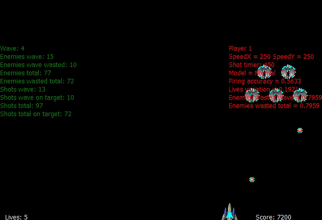

Shooter was a simple shoot'em up game designed for my Master in Computer Science dissertation. It implements a dynamic difficult adaptivity system that verifies player performance and adjusts enemy parameters to better suit the perceived player ability. More about the research is available in the Research section of this site.
The game was implemented in C++ using ClanLib 2.4. Enemies waves and player difficulty cathegories are describe using Lua.

Debug mode rendering observed variables and hitboxes.